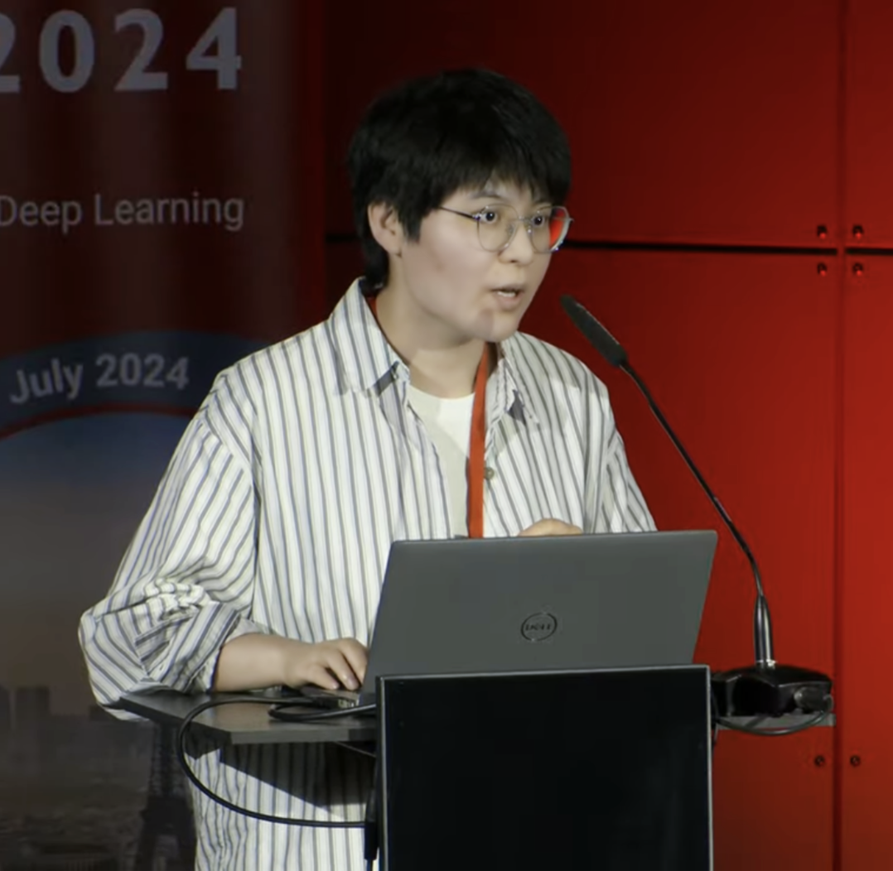

Ye Zhang
Ph.D. Candidate in Computational Pathology
Harbin Institute of Technology, Shenzhen | Leibniz-Institut für Analytische Wissenschaften (ISAS), Germany
Education
- Ph.D. Joint Training, ISAS Germany (2024 - Present)
- Ph.D. Candidate, Computer Science and Technology, HIT Shenzhen (2021 - Present)
- M.Sc., Applied Statistics, Lanzhou University (2018 - 2021) - Ranking: 1/65
- B.Sc., Agricultural and Forestry Economics, Beijing Forestry University (2013 - 2017)
Research Interests
- Computational Pathology
- Nuclei Segmentation and Classification
- High-Throughput Biomedical Image Analysis
- Multi-modal AI for Cancer Diagnosis
- Graph-based Tumor Microenvironment Modeling
Publications
- [1] Zhang Y, Wang Y, Fang Z, et al. DAWN: Domain-Adaptive Weakly Supervised Nuclei Segmentation. IEEE TCSVT 2024.
- [2] Zhang Y, Fang Z, Wang Y, et al. Category Prompt Mamba Network for Nuclei Segmentation and Classification. AAAI 2025.
- [3] Zhang Y, Guan X, Li H, et al. Multi-Scale Context Intertwining for Panoramic Renal Pathology Segmentation. ICASSP 2025.
- [4] Zhang Y, Wang Z, Wang Y, et al. Boundary-aware Contrastive Learning for Semi-supervised Nuclei Instance Segmentation. MIDL 2024 (Oral).
- [5] Zhang Y, Cai L, et al. SEINE: Structure Encoding and Interaction Network for Nuclei Instance Segmentation. JBHI (Major Revision).
- [6] Zhang Y, Zhou Y, et al. Four Color Theorem for Cell Instance Segmentation. ICML (Submitted).
- [7] Zhang Y, Zhou Y, et al. PathMR: A Fragmentation-Resilient Multimodal Visual Reasoning for Interpretable Pathology Diagnosis. ICCV (Submitted).
- [8] Wang Z, Zhang Y, Cai L, et al. Dynamic Pseudo Label Optimization in Point-Supervised Nuclei Segmentation. MICCAI 2024.
- [9] Fang Z, Zhang Y, et al. Mammil: Multiple instances learning for whole slide images with state space models. BIBM 2024.
- [10] Guan X, Zhang Y, et al. OT-StainNet: Optimal Transport-Driven Semantic Matching for Weakly Paired H&E-to-IHC Stain Transfer. AAAI 2025.
- [11] Guan X, Zhang Y, et al. Correlated Multiple IHC Virtual Staining for Breast Histopathological Images. ICASSP 2025.
- [12] Cai L, Zhang Y, et al. Rethinking Attention-Based Multiple Instance Learning for Whole-Slide Image Classification. MIA (Major Revision).
Projects
- Computational Pathology Imaging and Key Computational Technologies (2024-2028) - Principal Investigator
- AI Diagnosis System for Liver Diseases (2021-2023) - Research Member
- Image Acquisition and Processing (2020-2022) - Research Member
- Study on Changes in Northern Chinese Lakes Since the 1950s (2019-2024) - Research Member
Awards
- Excellent Graduate of Gansu Province
- AnShuo Scholarship
- Huawei Scholarship
- Third Prize in "Huawei Cup" Graduate Mathematical Modeling Competition
Technical Skills
- Deep Learning: PyTorch, MMDetection, MONAI
- Programming: Python, TensorFlow
- Medical Imaging Tools: QuPath, ImageJ